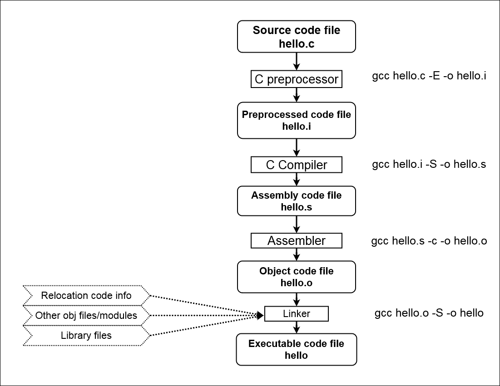
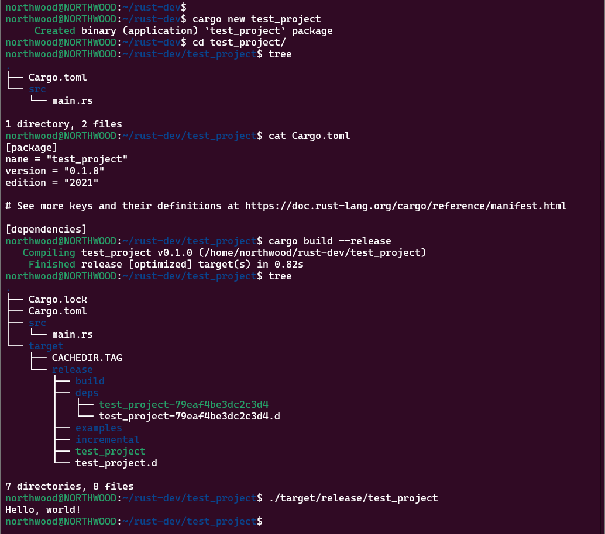
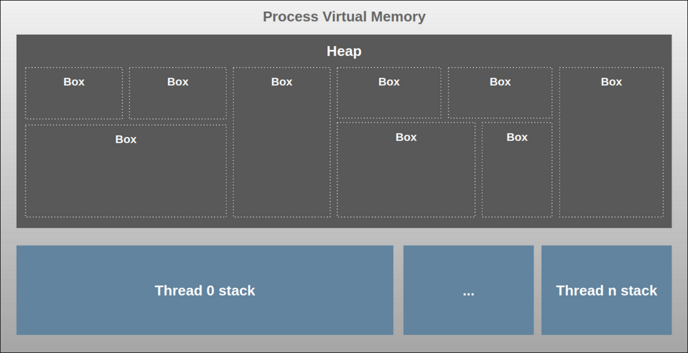
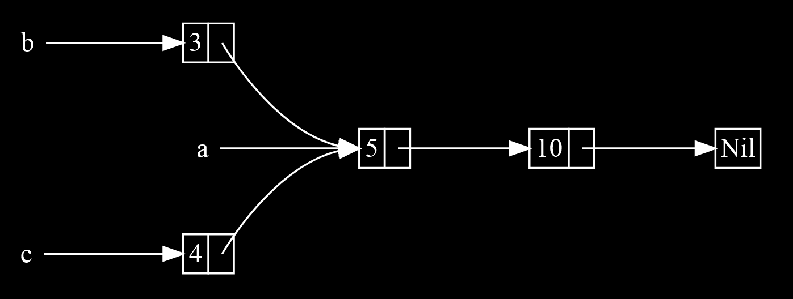

Rust Fundamentals
Bosch Cybersecurity UniversityTopics
Basics of Rust
Getting Started
- How to install rust.
- Rust tools.
- Rust Project Structure
Compilation Process in C/C++
Makefile
Compilation Process in Rust
TOML file
Data Types
Variables and Mutability
Variables are immutable by default
fn main() {
let x = 5;
println!("The value of x is: {x}");
x = 6;
println!("The value of x is: {x}");
}
Variables and Mutability
Error message displayed:
$ cargo run Compiling variables v0.1.0 (file:///projects/variables) error[E0384]: cannot assign twice to immutable variable `x` --> src/main.rs:4:5 2 | let x = 5; | - | | | first assignment to `x` | help: consider making this binding mutable: `mut x` 3 | println!("The value of x is: {x}"); 4 | x = 6; | ^^^^^ cannot assign twice to immutable variable For more information about this error, try `rustc --explain E0384`. error: could not compile `variables` due to previous error
Mutability
To fix the error add `mut` keyword before variable name.
fn main() {
let mut x = 5;
println!("The value of x is: {x}");
x = 6;
println!("The value of x is: {x}");
}
Output:
$ cargo run
Compiling variables v0.1.0 (file:///projects/variables)
Finished dev [unoptimized + debuginfo] target(s) in 0.30s
Running `target/debug/variables`
The value of x is: 5
The value of x is: 6
Constants
- Constants are values that are bound to a name and are not allowed to change
- `const` keyword is used to declare constants instead of the `let` keyword, and the type of the value must be annotated
- `mut` is not used with `const`
Constants
- Constants can be declared in any scope, including the global scope
- Constants may be set only to a constant expression, not the result of a value that could only be computed at runtime
struct Circle {
radius: f64,
}
impl Circle {
const PI: f64 = 3.14159;
fn new(radius: f64) -> Circle {
Circle { radius }
}
fn calculate_area(&self) -> f64 {
Circle::PI * self.radius * self.radius
}
}
Shadowing
- You can declare a new variable with the same name as a previous variable
- The first variable is shadowed by the second
fn main() {
let x = 5;
let x = x + 1;
{
let x = x * 2;
println!("The value of x in the inner scope is: {x}");
}
println!("The value of x is: {x}");
}
Shadowing
Output:
$ cargo run Compiling test-rust v0.1.0 (file:///projects/shadowing) Finished dev [unoptimized + debuginfo] target(s) in 3.20s Running `target/debug/test-rust` The value of x in the inner scope is: 12 The value of x is: 6
Data Types
- Data type subsets: scalar and compound
- Rust is a statically typed language, which means that it must know the types of all variables at compile time
- Data Structures
Scalar Types
- Integers
- Floating-point numbers
- Booleans
- Characters
A scalar type represents a single value
Integer Types
An integer is a number without a fractional component
| Number literals | Example |
|---|---|
| Decimal | 98_222 |
| Hex | 0xff |
| Octal | 0o77 |
| Binary | 0b1111_0000 |
| Byte (u8 only) | b'A' |
Floating-Point Types
fn main() {
let x = 2.0; // f64 (default)
let y: f32 = 3.0; // f32
}
Numeric Operations
fn main() {
// addition
let sum = 5 + 10;
// subtraction
let difference = 95.5 - 4.3;
// multiplication
let product = 4 * 30;
// division
let quotient = 56.7 / 32.2;
let truncated = -5 / 3; // Results in -1
// remainder
let remainder = 43 % 5;
}
The Boolean Type
- Rust has two possible values: true and false
- Booleans are one byte in size
- It is specified using `bool`
fn main() {
let t = true;
let f: bool = false; // with explicit type annotation
}
The Character Type
- Rust’s `char` type is the language’s most primitive alphabetic type
- Specify `char` literals with single quotes ' '
- Rust’s `char` type is four bytes in size and represents a unicode Scalar Value, which means it can represent a lot more than just ASCII
fn main() {
let c = 'z';
let z: char = 'ℤ'; // with explicit type annotation
let heart_eyed_cat = '😻'; //emoji
}
Compound Types
The Tuple Type
- A tuple is a general way of grouping together a different types into one compound type
- Fixed length
- Known at Compile time
- Heterogeneous
fn main() {
// creating tuple
let tup: (i32, f64, u8) = (500, 6.4, 1);
let gfg: (&str, &str, &str) = ("Apple", "For", "Bananas");
// accessing tuple data using positional argument
println!("{} {} {}", gfg.0, gfg.1, gfg.2);
// creating another tuple
let article = ("abc", "xyz", 14,12,2020);
let (a,b,c,d,e) = article;
// accessing tuple using variables
println!("This written by {} at {} on {}/{}/{}", b,a,c,d,e);
}
Destructuring Tuple
fn main() {
let tup = (500, 6.4, 1);
let (x, y, z) = tup;
println!("The value of y is: {y}");
}
The Array Type
- Collection of multiple values is with an array
- Every element of an array must have the same type
- Arrays in Rust have a fixed length
fn main() {
let a = [1, 2, 3, 4, 5];
}
Accessing Array Elements
fn main() {
let a = [1, 2, 3, 4, 5];
let first = a[0];
let second = a[1];
}
Compound Types
Exercise-1
fn main() {
let _arr = [1, 2, '3'];
println!("Success!");
}
Compound Types
Exercise-2
fn main() {
let arr = ['a', 'b', 'c'];
let ele = arr[1];
assert!(ele == 'a');
println!("Success!");
}
Data Structure
- Structs hold multiple related values
- In a struct you’ll name each piece of data so it’s clear what the values mean
- Order of the data to specify or access the values of an instance need not be same
Defining a Struct
- The `struct` keyword is used to declare a structure followed by the name
- Inside curly brackets, we define the names and types of the pieces of data, which we call 'fields'
struct User {
active: bool,
username: String,
email: String,
sign_in_count: u64,
}
fn main() {}
Instantiating a Struct
Create instance by stating the name of the `struct` and then add curly brackets {} containing 'key:value' pairs
- keys are the names of the fields
- values are the data stored in those fields
fn main() {
let user1 = User {
active : true,
username: String::from("someusername123"),
email : String::from("someone@example.com"),
count : 1,
};
}
Tuple structs
- 'tuple struct' is a hybrid between tuple and struct
- Tuple structs have a name, but their fields don't
- Declared with struct keyword, and then with a name followed by tuple
struct Person(String, u32);
fn main() {
// Create a new instance of the 'Person' tuple struct
let person1 = Person(String::from("Alice"), 30);
let person2 = Person(String::from("Bob"), 25);
// Access the fields of the tuple struct using dot notation
println!("{} is {} years old.", person1.0, person1.1);
println!("{} is {} years old.", person2.0, person2.1);
}
Enums
- The `enum` keyword allows the creation of a type which may be one of a few different variants
- Any variant which is valid as a struct is also valid as an enum
enum Work {
Civilian,
Soldier,
}
fn main() {
use crate::Work::{Civilian, Soldier};
// Equivalent to `Work::Civilian`.
let work = Civilian;
match work {
// Note the lack of scoping because of the explicit `use` above
Civilian => println!("Civilians work!"),
Soldier => println!("Soldiers fight!"),
}
}
Functions
What we are covering
- Define a Function in Rust
- Calling a Function in Rust
- Function Parameters
- Function with Return Value
- Traits
- Memory Management
- Generic Functions
- Associated Functions
- Method that Access Data
- Generic Types
- Closures
Define a Function in Rust
Function is a reusable block of code, in Rust `fn` keyword is used to define a function
//define a function
fn function_name(arguments) -> return_type {
// code
}
Example:
// greet function
fn greet() {
println!("Hello world!");
}
// main function
fn main() {
}
Calling a Function in Rust
Function name followed by parentheses "()" is used to call a function
fn greet() { <---------
|
println!("Hello world!"); | Execution flow is
} | tranferred to
| called function
fn main() { |
greet(); -------------------^
}
Function Parameters
fn multiply(num1: f64, num2: i64) {
let result = num1 * num2 as f64;
println!("Result: {}", result);
}
In this example function multiply accepts two parameters:
- 'num1' - which has type f64 i.e. float 64
- 'num2' - which has type i64 i.e. integer 64
Function with Return Value
- `->` syntax is used to specify the return type
- possible to return a without explicitly using the `return` keyword
- the last expression is returned as the result of function
fn return_nothing() {
// code
}
fn return_bool() -> bool {
//code
return true;
}
fn multiply(float: f64, integer: i64) -> f64 {
let result = float * integer as f64;
result
}
Traits
Trait Definition
- Traits are defined by the `trait` keyword followed by the name of the trait
- While defining any trait we have to provide method signatures (method declaration)
pub trait Calculator {
fn add(&self) -> i32;
fn sub(&self) -> i32;
fn div(&self) -> i32;
fn mul(&self) -> i32;
}
Trait implementation
- `impl` keyword used to implement a trait
- `for` is used when implementing traits as in impl Trait for Type
impl trait_name for type_name {
//method definitions
}
Example
struct Calc {
first_num: i32,
second_num: i32
}
impl Calculator for Calc {
fn add(&self) -> i32 {
self.first_num + self.second_num
}
fn sub(&self) -> i32 {
self.first_num - self.second_num
}
fn div(&self) -> i32 {
self.first_num / self.second_num
}
fn mul(&self) -> i32 {
self.first_num * self.second_num
}
}
fn main() {
println!("Output of Add: {}", Calc {first_num:2, second_num: 2}.add());
println!("Output of Sub: {}", Calc {first_num:4, second_num: 2}.sub());
println!("Output of Div: {}", Calc {first_num:10, second_num: 2}.div());
println!("Output of Mul: {}", Calc {first_num:2, second_num: 2}.mul());
}
Output:
Compiling playground v0.0.1 (/playground)
Finished dev [unoptimized + debuginfo] target(s) in 0.59s
Running `target/debug/playground`
Output of Add: 4
Output of Sub: 2
Output of Div: 5
Output of Mul: 4
Generic Functions
Generic parameters allow a function, struct, or enum to work with multiple types, instead of just one specific type. You can specify generic parameters in a function signature by enclosing them in angle brackets (< >) after the function name.
Example using PartialOrd trait
fn min< T:PartialOrd > (a: T, b: T) -> T {
if a < b {
a
} else {
b
}
}
fn main(){
let x = min(5, 10); // integer
let y = min(5.0, 10.0); // float
let z = min("hello", "world"); // string
println!("x: {x}");
println!("y: {y}");
println!("z: {z}");
}
i32 | f64 | string
Associated Functions
- Function that belongs to a struct or enum, rather than an instance of that struct or enum
- Associated functions are called using the name of the struct or enum, followed by the double colon (::) operator
Example of an associated function `new` that acts as a constructor
struct Point {
x: i32,
y: i32,
}
impl Point {
fn new(x: i32, y: i32) -> Point {
Point { x, y }
}
}
fn main(){
let p = Point::new(1, 2);
}
Methods that access data
- 'new': a constructor that creates a new instance of the Rectangle struct
- 'area': a method that calculates the area of the Rectangle and uses `&self` to access the data
struct Rectangle {
width: i32,
height: i32,
}
impl Rectangle {
fn new(width: i32, height: i32) -> Rectangle {
Rectangle { width, height }
}
fn area(&self) -> i32 {
self.width * self.height
}
}
Closures
- Closure is an anonymous function that can capture values from the enclosing environment and defined using the `||` characters
- Optional body delimination `{ }` for a single expression (mandatory otherwise)
let print_text = | | println!("Hello, World!");
~~~ ~~~~~~~~~~~~~~~~~~~~~~~~~
^ ^
| |
start of closure Body of closure
Closures
Examples:
fn call_function< F: Fn(i32) -> i32>(f: F, x: i32) -> i32 {
f(x)
}
fn return_function() -> Box < dyn Fn(i32) -> i32> {
Box::new(|x: i32| -> i32 { x * x })
}
fn main(){
// Closure
let square = |x: i32| -> i32 { x * x };
println!("The square of 2 is {}", square(2));
// Closure can be passed as an argument to a function
println!("The square of 2 is {}", call_function(square, 2));
// Closure can be returned as a result from a function:
let square = return_function();
}
Strings
Strings
There are two types of strings in Rust
String
- Implemented as a smart pointer, specifically a Vec
- Heap allocated, growable
- Can be mutated
- Always be a valid UTF-8, not null terminated sequence
Deref and String
String implements Deref trait, which means that you can pass a &String to something expecting a &str, and it will just work:
fn accepts_str(s: &str) {
// code ..
}
fn main(){
let s = String::from("hello");
accepts_str(&s);
}
&str
- An immutable reference to a valid UTF-8 sequence
- May be anywhere, on the heap, stack, or in program memory
- Only seen as a borrowed value
- Has a fixed size, the value is known at run time
let s: String = String::from("hello world");
let world: &str = &s[6..11];

Initialization
String
// creating a String using the String::new
let s = String::new();
//creating a String using the String::from function
let s = String::from("hello");
//converting a `&str` to a `String` using the to_string method
let s = "hello".to_string();
&str
//creating an &str from a string literal let s = "hello"; //creating an &str from a String: let s = String::from("hello"); let str_slice = &s[0..2];Use `&str` when you just want to borrow a reference to a string
Operations on Strings
concatenation | appending | slicing | splitting | replacing | iterating | checking starts prefix | checking ends suffix
let s1 = String::from("hello world");
let mut s2 = String::from("rust is awesome");
let s3 = s1 + &s2; // Concat using the `+` operator
let s4 = format!("{}{}",s1,s2);// Concat using the format! macro
s2.push_str(", & memory safe");// Appending using the push_str
let slice = &s1[0..2]; // Slicing using string indices
for c in "hello".chars() { // Iterating over the string
println!("{}", c);
}
println!("Length:{}", s1.len());// Finding the length of a string
if(s1.starts_with("he")){} // Check if starts with a prefix
if(s1.ends_with("ld")){} // Check if ends with a suffix
Ownership & Borrowing
Ownership
- Every resource has a unique owner
- The owner can change the owning value according to mutability
- Ownership can be transferred to an other variable
- Owner cannot free or mutate its resource while it is borrowed
- Ownership model guarantees safety
Ownership Rules
Each value in Rust has only one owner
fn main () {
let vector1 = vec![1, 2, 3];
}
here 'vector1' is owner
fn main () {
let vector1 = vec![1, 2, 3];
~~~~~~~~~~~~~ <---
|
This memory
gets `deallocated`
} <------------------------- here `vector1` goes out of scope
Value is dropped,
when owner goes out of scope.Ownership Rules
fn main () {
let vector1 = vec![1, 2, 3]; <--`vector1` is invalid variable
let vector2 = vector1; beacause
~~~~~~~ <------------------ `vector2` is New Owner
println!("{:?}",vector1);
}
Error:
error[E0382]: borrow of moved value: `vector1`
--> src/main.rs:4:19
|
2 | let vector1 = vec![1, 2, 3];
| ------- move occurs because `vector1` has
| type `Vec< i32>`, which does not implement
| the `Copy` trait
3 | let vector2 = vector1;
| ------- value moved here
4 | println!("{:?}",vector1);
| ^^^^^^^ value borrowed here after move
Borrowing
let vector2 = &vector1;
^ -------------
someFunction(&vector1); |---> Reference
^ --------------
Borrowing Rules
All references are immutable
by default.
fn main () {
let mut vector1 = vec![1, 2, 3];
^^^ --------------------
let vector2 = &mut vector1; |---> Explicitly mentioned
^^^ ---------- as `mutable`
using `mut` keyword
}
Borrowing Rules
Not more than one
'mutable reference' is allowed in a scope
fn main () {
let mut _vector1 = vec![1, 2, 3];
let _vector2 = &mut _vector1;
let _vector3 = &mut _vector1;
^^^^^^^^^^^^^^^^^^^^^^^^^^^^^ ---> NOT ALLOWED
}
'mutable' and 'immutable' reference can not go hand in hand within a scope
Traits
Default implementation of trait
- Rust allows you to provide a default implementation of the Trait’s methods
- A Type can keep the implementation or can override also
- In the same Trait, default implementation can call another method also
Example
pub trait Calculator {
fn add(&self) -> i32;
fn sub(&self) -> i32;
fn get_result(&self) {
println!("The result of Addition is {}", self.add());
}
}
struct calc {
first_num: i32,
second_num: i32
}
impl Calculator for calc {
fn add(&self) -> i32 {
self.first_num + self.second_num
}
fn sub(&self) -> i32 {
self.first_num - self.second_num
}
}
fn main() {
Data {first_num:2, second_num: 2}.get_result();
println!("Output of Sub: {}", Data {first_num:4, second_num: 2}.sub());
}
Implement traits for existing types
- Unlike interfaces in languages like Java, new traits can be implemented for existing types
- For example, we can implement trait for existing types like bool, f32, i32, etc.
trait PrintInfo { //Define a trait called `PrintInfo`
fn print_info(&self);
}
impl PrintInfo for i32 { // Implement `PrintInfo` for the built-in type `i32`
fn print_info(&self) {
println!("This is an integer: {}", self);
}
}
fn main() {
let num: i32 = 42;
num.print_info(); // Output: "This is an integer: 42"
}
Access Methods from the Same Trait
We can access other methods declared in the same trait using `self`
trait Calculator {
fn add(&self) -> u32;
// We can provide default method definitions.
fn get_result(&self) {
println!("Result of Add() is {}", self.add());
}
}
Passing Trait as a Function’s Parameters
Passing trait into a function’s parameter is a quite interesting concept in the traits environment so, with the help of this user can put the restriction into his functionality like only limit functions can able to use it.
pub fn calculate(item: impl Calculator) {
println!("Addition {}", item.add());
}
Trait Bound Concept
Trait Bound Concept is quite similar to the Passing Trait as a Function’s Parameters but with some syntactical differences.
pub fn calculate< T: Calculator> (item: T) {
println!("Addition {}", item.add());
}
+ Operator & where Clause
+ operator is used to add more trait bound.
pub fn calculate< T: Calculator + other_Trait> (item: T) -> u32 {
/// function's stuff
}
`where` clause is used to simplify the concept of Trait Bound like
/// without where clause
pub fn calculate< T:Calculator, U:Display> (item: T, data: U) -> u32 {
/// function's stuff
}
///with where clause
pub fn calculate< T, U> (item: T, data: U) -> u32
where T: Calculator,
U: Display
{
/// function's stuff
}
Lifetimes
- It represents scope in which a reference is valid
- It ensures that references do not outlive the data they refer to
- By analyzing the lifetimes, the compiler can enforce memory safety
- Lifetimes are denoted by apostrophes ('), also known as "ticks"
- Often used in function signatures, struct definitions, and generic type parameters to specify the relationship between references
fn longest_string<'a>(s1: &'a str, s2: &'a str) -> &'a str {
if s1.len() > s2.len() {
s1
} else {
s2
}
}
fn main() {
let s1 = "Hello";
let s2 = "World";
let result = longest_string(s1, s2);
println!("Longest string: {}", result);
}
Visibility Modifiers
- It control the accessibility of structs, enums, functions, methods, and modules
- Rust provides three visibility modifiers:
- `pub`: accessible from other modules or crates
- `pub(crate)`: accessible only within the same crate
- `pub(in path)`: accessible only within the specified module path and its submodules.
mod my_module {
pub struct PublicStruct { }
struct PrivateStruct { }
pub fn public_function() { }
fn private_function() { }
pub(crate) fn crate_function() { }
pub(in crate::my_module::nested) fn restricted_function() { }
}
fn main() {
let public_struct = my_module::PublicStruct {};
my_module::public_function();
// let private_struct = my_module::PrivateStruct {}; // Error: not accessible here
// my_module::private_function(); // Error: not accessible here
}
Memory Management
Memory Management
Rust program process is allocated some virtual memory by the Operating System(OS), this is the total memory that the process has access.
Heap Memory
- This is where all dynamic data (any data for which size cannot be calculated at compile time) is stored
- This is the biggest block of memory and the part managed by Rust’s Ownership model
- Box: The Box type is an abstraction for a heap-allocated value in Rust
- Heap memory is allocated when Box::new is called
- A Box < T > holds the smart-pointer to the heap memory, allocated for type T and the reference is saved on the Stack
Stack Memory
- This is the stack memory area and there is one stack per thread
- This is where static values are allocated by default
- Static data (data size known at compile time) includes function frames, primitive values, structs and pointers to dynamic data in Heap
Memory Usage
All values in Rust are allocated on the stack by default. There are two exceptions to this:
- When size of the value is dynamic like Strings/Vectors
- When you manually create a Box < T > value which is allocated on heap
In both cases, the value will be allocated on heap and its pointer will live on the stack.
Smart Pointers
- A pointer is a general concept for a variable that contains an address in memory.
- Smart pointers implement the `Deref` and `Drop` traits
- The Deref trait allows an instance of the smart pointer struct to behave like a reference so you can write your code to work with either references or smart pointers
- The Drop trait allows you to customize the code that automatically runs when an instance of the smart pointer goes out of scope
Smart pointers in the std lib
- UnsafeCell< T > used to represent a cell that can be mutated even when aliased or shared
- A mutable memory location. Cell< T > has the same in-memory representation as its inner type T
- Box< T > for allocating values on the heap
- Rc< T > for reference counting type that enables multiple ownership
- Ref< T > and RefMut< T >- accessed through RefCell< T >- a type that enforces the borrowing rules at runtime instead of compile time
UnsafeCell< T >
- Provides a low-level mechanism to mutate a value even when aliased or shared, bypassing Rust's usual borrowing and ownership rules
- `UnsafeCell< T >` is essential for cases where you need mutable access to a value behind shared references but must ensure safety yourself
- Usage of UnsafeCell< T > typically takes place within unsafe blocks, allowing controlled, low-level manipulation while adhering to Rust's safety principles
Cell< T >
- `Cell< T >` has the same memory layout and caveats as `UnsafeCell< T >`
- This means that `Cell< T >` has the same in-memory representation as its inner type T
Box< T >
- Boxes allow you to store data on the heap rather than the stack. What remains on the stack is the pointer to the heap data.
- Box< T > allows immutable or mutable borrows checked at compile time
fn main() {
let b = Box::new(5);
println!("b = {}", b);
}
Rc< T >
- Rc< T > : (reference counting) enables multiple ownership explicitly by using the Rust type
- The Rc< T > type keeps track of the number of references to a value to determine whether or not the value is still in use
- If there are zero references to a value, the value can be cleaned up without any references becoming invalid
- Rc< T > allows only immutable borrows checked at compile time
Rc< T >
RefCell< T >
- RefCell< T > type represents single ownership over the data it holds
- At any given time, you can have either (but not both) one mutable reference or any number of immutable references
- RefCell< T > allows immutable or mutable borrows checked at runtime
- RefCell< T > and Box< T > have single owners; Rc< T > enables multiple owners of the same data
Control Flow
if expression
- The most common way to introduce control flow and branch code
- Provide a condition and then execute the block of code if the condition is met
fn main() {
let price: i32 = 10;
if price > 0 {
println!(“true”);
}
}
if-else expression
- An else expression can be added optionally
- If no else is provided the program will skip the if block if the condition is false
fn main(){
let price: i32 = 10;
if price > 0 {
println!(“true”);
}
else {
println!(“false”);
}
}
else-if expression
- If you have more than two condition to check, if and else can be combined in else-if expression
- In the case all if and else if conditions evaluates to false, then the else block is executed
fn main(){
let price: i32 = 10;
if price == 1 {
println!(“price is 1.”);
}
else if price == 2 {
println!(“price is 2.”);
}
else {
println!(“other price”);
}
}
match
- Rust provides pattern matching with the match keyword
- Arms are evaluated and compared with the scrutineer expression
- Each arm has a pattern and some code. The `=>` operator separates the pattern and the code to run
fn main(){
let x = 1;
match x {
1 => println!(“one”),
2 => println!(“two”),
3 => println!(“three”),
4 => println!(“four”),
5 => println!(“five”),
_ => println!(“something else”),
}
}
loop
- Used to execute over block of code forever, or until it is stopped, or the program quits
- Instead of having this `loop` infinitely the `break` keyword can be used
fn main() {
let mut i = 0;
loop {
i += 1;
if i > 100 { break; }
}
}
while
- Conditional loops
- Run until the condition is met or becomes false
fn main(){
let mut num = 3;
while num !=0 {
println!(“{}”, num);
num -= 1;
}
println!(“LIFTOFF!!”);
}
for loop
- Iterate over an element in a collection
- Every iteration of loop extracts values
fn main(){
let a = [10, 20, 30, 40, 50];
for element in a.iter() {
println!(“the value is {}”, element);
}
}
iterators
- In Rust, iterators help us achieve the process of looping.
- Using the iter() function, we tell Rust that the given array can be used with a loop
fn main(){
let a = [10, 20, 30, 40, 50];
for element in a.iter() {
println!(“the value is {}”, element);
}
}
iterator trait
- In Rust, all iterators implement a trait named 'iterator' that has a method called next()
- Using the iter() function, we tell Rust that the given array can be used with a loop
fn main(){
let a = [10, 20, 30, 40, 50];
for element in a.iter() {
println!(“the value is {}”, element);
}
}
Any data type which implements next() method can be iterator.
Difference in into_iter, iter, iter_mut
- into_iter: Consumes the collection, once the collection has been consumed, it is no longer available for reuse
- iter: This borrows each element of the collection through each iteration, thus leaving the collection untouched and available for reuse after the loop
- iter_mut: This mutably borrows each element of the collection, allowing for the collection to be modified in place
Creating our own iterator
Example:
struct Counter { count: u32, } impl Counter { fn new() -> Counter { Counter { count: 0 } } } impl Iterator for Counter { type Item = u32; fn next(&mut self) -> Option< Self::Item> { if self.count < 5 { self.count += 1; Some(self.count) } else { None } } } fn main() { let mut counter = Counter::new(); assert_eq!(counter.next(), Some(1)); assert_eq!(counter.next(), Some(2)); assert_eq!(counter.next(), Some(3)); assert_eq!(counter.next(), Some(4)); assert_eq!(counter.next(), Some(5)); assert_eq!(counter.next(), None); }
Excercise:
struct Fibonacci {
curr: u32,
next: u32,
}
// Implement `Iterator` for `Fibonacci`.
// The `Iterator` trait only requires a method to be defined for the `next` element.
impl Iterator for Fibonacci {
// We can refer to this type using Self::Item
type Item = u32;
/* Implement next method */
fn next(&mut self)
}
// Returns a Fibonacci sequence generator
fn fibonacci() -> Fibonacci {
Fibonacci { curr: 0, next: 1 }
}
fn main() {
let mut fib = fibonacci();
assert_eq!(fib.next(), Some(1));
assert_eq!(fib.next(), Some(1));
assert_eq!(fib.next(), Some(2));
assert_eq!(fib.next(), Some(3));
assert_eq!(fib.next(), Some(5));
}
Error Handling
Types of Error Handling
- Error handling is the process of anticipating and working with the possibility of failure
- Learning how to handle errors in rust is the most effective and time saving
- There are two types of Errors in rust:
- Unrecoverable Errors
- Recoverable Errors
Unrecoverable Errors
Unrecoverable errors are symptoms of bugs
panic! macro is the simplest way of handling errors
fn main() {
panic!("crash and burn");
}
What happens when panic is encountered?
- Failure message is printed
- Program windups the stack
- Then it quits
When to use panic?
Panic should be used only when a program comes to an unrecoverable state
Recoverable Errors
Use of Option enum
Most errors aren’t serious enough that requires a program to stop entirely
Option < T > enum is useful to handle non-existing values
fn main(){
enum Option< T > {
Some(T),
None,
}
}
Recoverable Errors
Use of Result enum
Result type enum is used for most common errors, when an operation is expected to work but it does not
Result < T, E > enum is well suited when problems are expected
fn main(){
enum Result< T, E>{
Ok(T),
Err(E),
}
}
Helper Functions of Result Type
`unwrap`
use std::fs::File;
fn main(){
let f = File::open("hello.txt").unwrap();
}
`expect`
use std::fs::File;
fn main(){
let f = File::open("hello.txt")
.expect("Failed to open hello.txt");
}
The '?' operator
This is similar to match statement
fn question() -> Result < (), Error> {
// let x = ..
match ultimate_answer(x) {
Ok(_) => {},
Err(err) => return Err(err.into()),
};
// code
}
The above code can be simplified using this '?'
fn question() -> Result < (), Error> {
// let x = // ...
ultimate_answer(x)?; // if `ultimate_answer` returns an error,
//`question` stops here
//and returns the error.
}
Error Propagation
- Code must propagate error information back to caller function after detecting it
- One of the benefits is that your code will look cleaner by simply propagating error information back to the caller that can handle the error
- Other benefit is that your function doesn’t need extra code to propagate both the successful and unsuccessful cases
fn open_file() -> Result< (), std::io::Error> {
let file: Result< std::fs::File, std::io::Error> = std::fs::File::open("hello.txt");
match file {
Ok(_) => Ok(()), Err(e) => Err(e),
}
}
fn main() {
match open_file() {
Ok(_) => println!("File is opened successfully!"),
Err(e) => panic!( "Not able to open file. Here is the reason {:?}", e.to_string()),
}
}
Range and Bounds Checking
- Range Checking ensures that a value falls within a specific acceptable range or interval
- Bounds Checking ensures that an index or reference to an element within a data structure (e.g. an array or slice) is within the valid bounds
Range Checking
fn main(){
let value = 42;
let lower_bound = 0;
let upper_bound = 100;
if(lower_bound..=upper_bound).contains(&value){
println!("Value {} is within the range {}..={}", value, lower_bound, upper_bound);
}else{
println!("Value {} is outside the valid range {}..={}", value, lower_bound, upper_bound);
}
}
Bounds Checking
fn main(){
let my_array = [1,2,3,4,5];
let index = 7; //Trying to access out-of-bounds indexh
let result = my_array.get(index);
match result{
Some(value) => println!("Value at index {} is {}",index, value),
None => println!("Index {} is out of bounds for the array", index)
}
}
Concurrency
Fearless Concurrency
- Message-passing concurrency, where 'channels' send messages between threads
- Shared-state concurrency, where multiple threads have access to same piece of data
- The Sync and Send traits, which extend Rust’s concurrency guarantees to user-defined types as well as types provided by the standard library
Creating a New Thread
To create a new thread, we call the thread::spawn function and pass it a closure containing the code we want to run in the new thread
use std::thread;
use std::time::Duration;
fn main() {
thread::spawn(|| {
for i in 1..10 {
println!("hi number {} from the spawned thread!", i);
thread::sleep(Duration::from_millis(1));
}
});
for i in 1..5 {
println!("hi number {} from the main thread!", i);
thread::sleep(Duration::from_millis(1));
}
}
Creating a New Channel
- Channel has two halves: transmitter and receiver
- One thread uses transmitter to send data on the channel
- Other thread uses receiver to receive data from the channel
- Channel is closed if either transmitter or receiver is dropped
use std::sync::mpsc;
use std::thread;
fn main() {
let (tx, rx) = mpsc::channel();
thread::spawn(move || {
let val = String::from("hi");
tx.send(val).unwrap();
});
let received = rx.recv().unwrap();
println!("Got: {}", received);
}
Shared-State Concurrency
- Shared memory concurrency is like multiple ownership
- Multiple threads can access same data at the same time
- `Mutex` ensures access to shared data to only one thread at a time
use std::sync::{Arc, Mutex};
use std::thread;
fn main() {
let counter = Arc::new(Mutex::new(0));
let mut handles = vec![];
for _ in 0..10 {
let counter = Arc::clone(&counter);
let handle = thread::spawn(move || {
let mut num = counter.lock().unwrap();
*num += 1;
});
handles.push(handle);
}
for handle in handles {
handle.join().unwrap();
}
println!("Result: {}", *counter.lock().unwrap());
}
Send and Sync Traits
- The `Send` marker trait indicates that ownership of values of the type can be transferred between threads.
- The `Sync` marker trait indicates that it is safe to be shared between threads
- Any type < T > is Sync if &T is Send, meaning the immutable reference can be sent safely to another thread
- Similar to Send, primitive types are Sync, and types composed entirely of types that are Sync are also Sync
Send Trait
If a type implements Send, it is guaranteed to be safe to `move` between threads. It means that multiple threads can use a value of that type
use std::thread;
fn main(){
let data = vec![1, 2, 3];
thread::spawn(move || {
println!("{:?}", data);
});
}
Sync Trait
If a type implements Sync, it is guaranteed to be safe to share between threads and a value of that type can be accessed in multiple threads at the same time
use std::sync::Arc;
use std::thread;
fn main(){
let data = Arc::new(vec![1, 2, 3]);
let data_clone = data.clone();
thread::spawn(move || {
println!("{:?}", data_clone);
});
println!("{:?}", data);
}
Use `Arc` instead of a raw pointer, it provides thread-safety and prevent data race conditions
Async / Await
What is async programming ?
A concurrent programming model
Multitasking
- One of the fundamental features of most operating systems is multitasking, which is the ability to execute multiple tasks concurrently
- Pre-emptive Multitasking
Pre-emptive multitasking is that the operating system controls when to switch tasks
- Co-operative Multitasking
Co-operative multitasking lets each task run until it voluntarily gives up control of the CPU
Async / Await
- Built-in tool in rust programming for writing asynchronous functions
- async
Transforms a block of code into a state machine that implements a trait called 'future'.
- await
- Mechanism to run a future
- It asynchronously waits for the future to complete.
Futures
- A future represents a value that might not be available yet
- Futures make it possible to continue execution until the value is available
let future = async_read_file("foo.txt");
let file_content = loop {
match future.poll(…) {
Poll::Ready(value) => break value,
Poll::Pending => {}, // do nothing
}
}
pub enum Poll< T > {
Ready(T),
Pending,
}